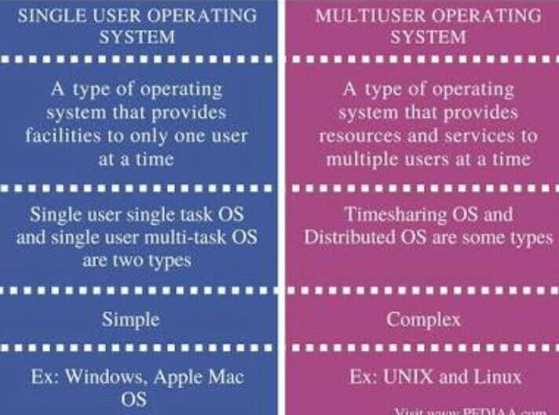

Single-user operating systems have no facilities to distinguish users, but may allow multiple programs to run in tandem. A multi-user operating system extends the basic concept of multi-tasking with facilities that identify processes and resources, such as disk space, belonging to multiple users, and the system permits multiple users to interact with the system at the same time. Time-sharing operating systems schedule tasks for efficient use of the system and may also include accounting software for cost allocation of processor time, mass storage, printing, and other resources to multiple users.
